Introduction to Medical Imaging
BME/EECS 516
Douglas C. Noll (edited by JF)
Medical Imaging
- Non-invasive visualization of internal organs, tissue, etc.
- Is endoscopy an imaging modality?
- Image - a 2D signal $f(x, y)$ or 3D $f(x, y, z)$
- Is a 1D non-imaging sensing techniques an imaging modality?
Major Modalities
- Projection X-ray (Radiography)
- X-ray Computed Tomography (CT)
- Nuclear Medicine (SPECT, PET)
- Ultrasound
- Magnetic Resonance Imaging
Projection X-ray Imaging

- Image records transmission of x-rays through object
- The integral is a line-integral or a "projection" through obj
- $\mu(x, y, z)$ - x-ray attenuation coefficient, a tissue property, a function of electron density, atomic #, ...
- X-ray imaging requires interactions of x-ray photons with object - work in a specific energy band
- Above this band - body is too transparent
- Below this band - body is too opaque
- Well below this band - wavelengths are too long
- One problem with x-ray imaging: no depth (z) info
X-ray Imaging Projection vs Tomographic
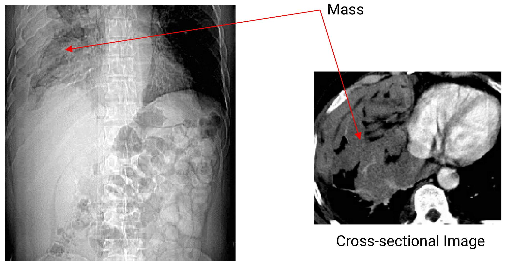Projection Image
X-ray Computed Tomography
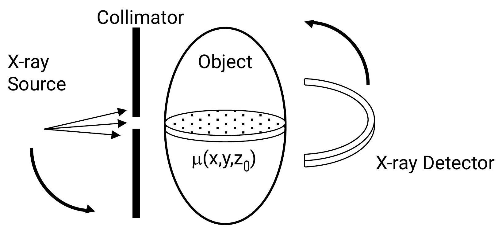
- Uses x-rays, but exposure is limited to a slice (or "a couple of" slices) by a collimator
- Source and detector rotate around object - projections from many angles
- The desired image, $l(x, y)=\mu\left(x, y, z_{0}\right)$, is computed from the projections
Anatomical vs Functional Imaging
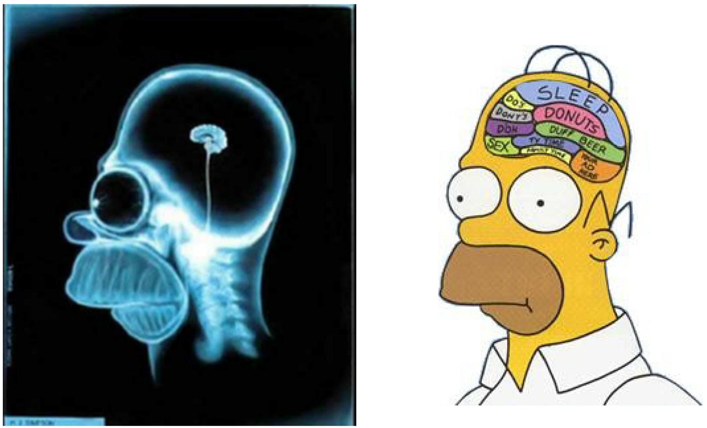
Nuclear Medicine (Scintigraphy)
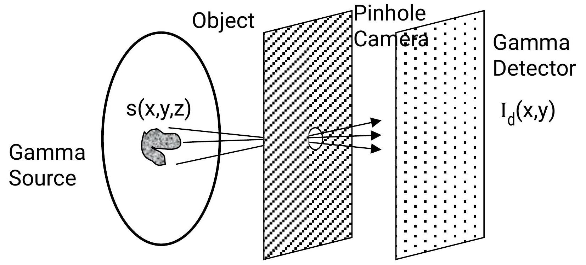


- Detector records emission of gamma photons from radioisotopes introduced into the body
- The integral is a line-integral or a "projection" through obj
- Source $s(x, y, z)$ usually represents a selective uptake of a radio-labeled pharmaceutical
Nuclear Medicine (Scintigraphy) Issues
- Issue: Pinhole Size - Large pinhole - more photons, better SNR - Large pinhole - more blur, reduced resolution
- Issue: Half-life - Long half lives are easier to handle, but continue to irradiate patient after imaging is done
- Issue: Functional Specificity - Pharmaceuticals must be specific to function of interest - E.g. Thallium, Technicium
- Issue: No depth info - Nuclear Medicine Computed Tomography (SPECT, PET)
Nuclear Medicine (Scintigraphy) Example
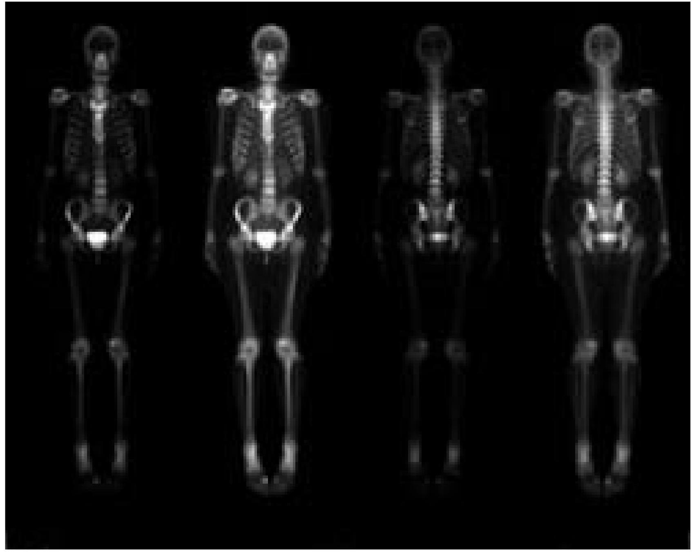Bone Scan
SPECT Scanner (3 Heads)
Nuclear Medicine (SPECT)
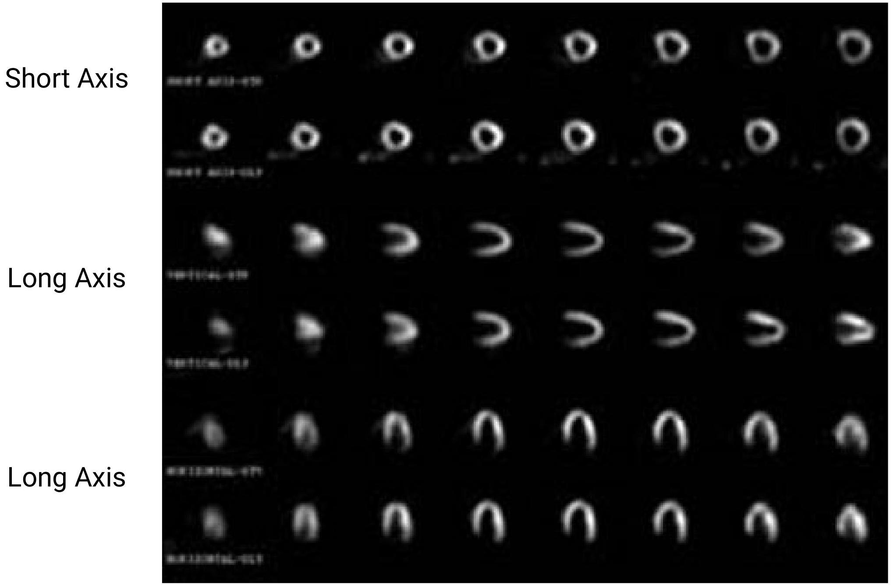PET Scanner
PET-CT Scanner
PET-CT Scan
Ultrasound Imaging
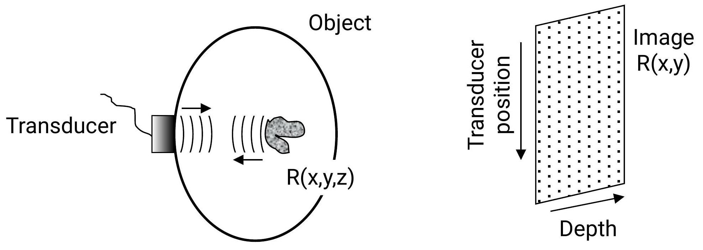
- Image reflectivity of acoustic wave, $R(x, y, z)$.
- Depth - A function of time (ping-echo)
- Lateral - Focusing of wavefronts
- Direct imaging (e.g. vs. computed) modality - echo data is placed directly into image matrix
Ultrasound Imaging Issues
- Issue: Transmit Frequency - Increase in frequency reduces wavelength: - Reduced (improved) resolution size (2-3 $\lambda$) - Also improved lateral resolution (diffraction): - Increases attenuation (and thus, range of depth)
- Issue: Flow - Can use Doppler effect to image flow
- Issue: Speckle - Most noise in US is speckle (signal dependent)
Ultrasound Imaging Examples
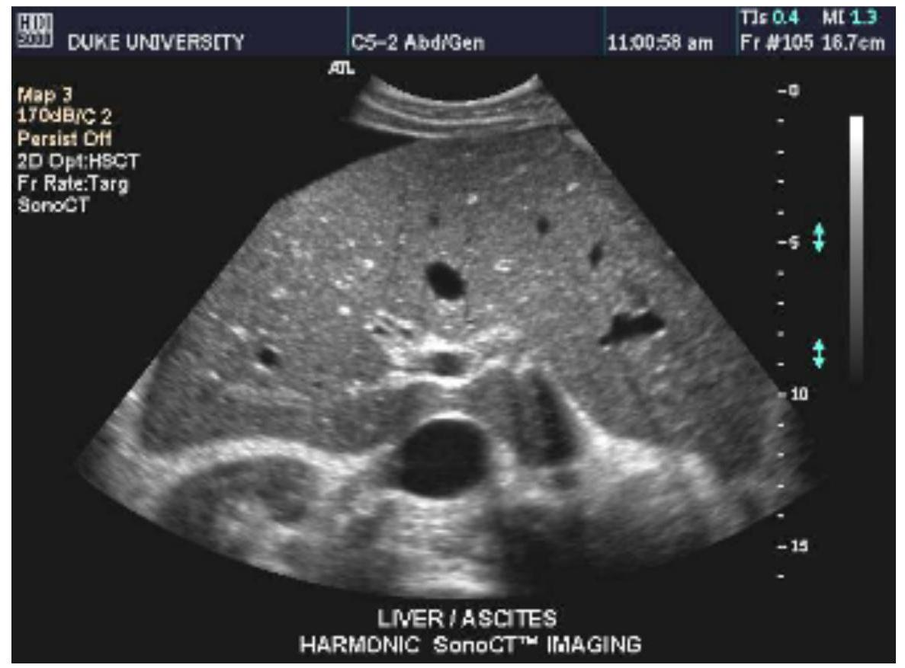High-Resolution
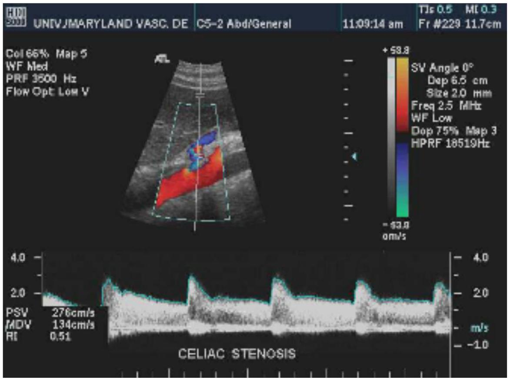Color Doppler
Magnetic Resonance Imaging
- Atomic nuclei and hydrogen nuclei, ${ }^{1} \mathrm{H}$, in particular, have a magnetic moment
- Moments tend to become aligned to applied field
- Creates magnetization, $m(x, y, z)$ (a tissue property)
- MRI makes images of m(x,y,z)
Magnetic Resonance Imaging Principles

RF Excitation (Energy into tissue)
Magnetic fields are emitted
- The magnetization is excited into an observable state
- Magnetization emits energy at a resonant frequency: $$\omega=\lambda B$$
Magnetic Resonance Imaging Principles
- Frequency is proportional to magnetic field
- We can create a frequency vs. space variation: $$\omega(x, y, z)=\lambda \mathrm{B}(x, y, z)$$
- Use Fourier analysis to determine spatial location
- Interestingly, $\lambda$ is much larger than resolution - not imaging EM direction, but using its frequency
MRI Examples
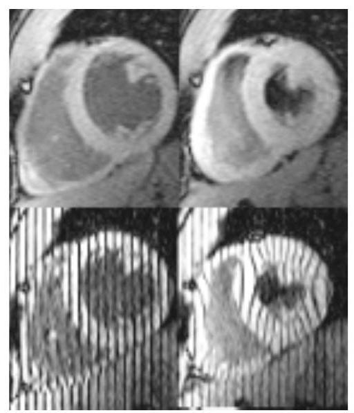cardiac
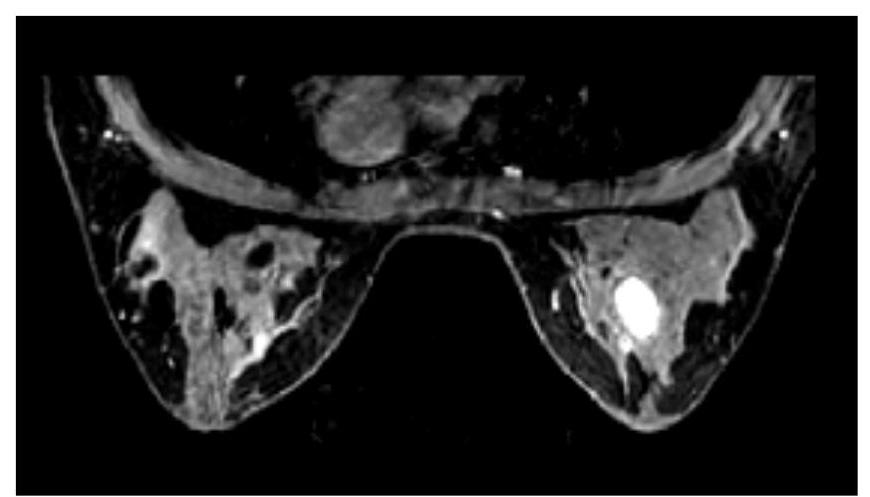cancer
Diffusion / perfusion mismatch may be a marker for territory at risk.
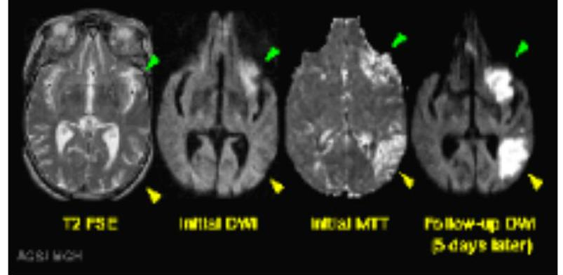stroke
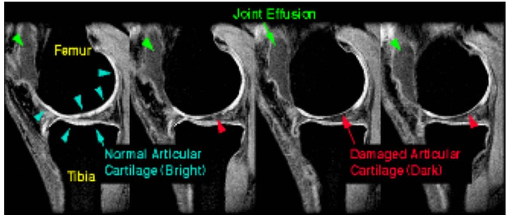joint
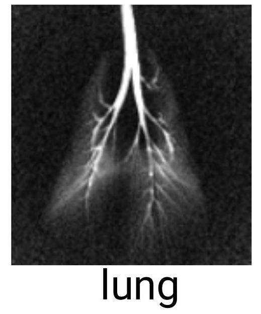